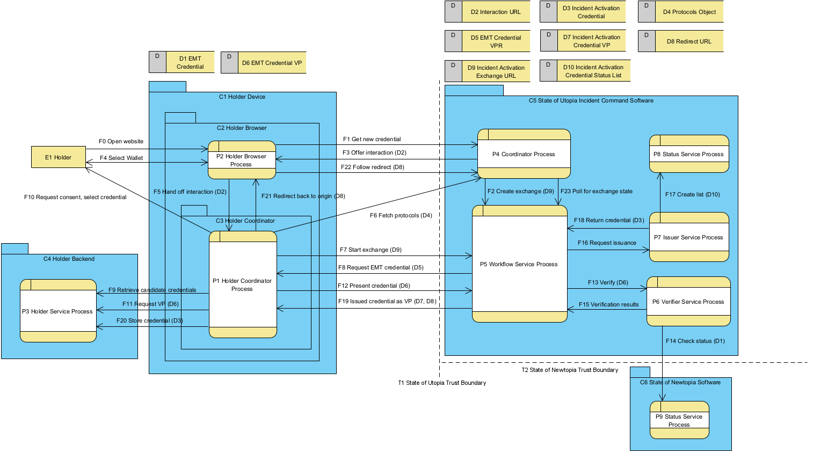

This threat model describes known threats of Verifiable Credential API for Lifecycle Management (VCALM) specification at https://www.w3.org/TR/vcalm-1.0/.
VCALM specifies an API that enables the usage of [[VC-DATA-MODEL-2.0]] throughout the lifetime of [=verifiable credentials=].
This section describes the status of this document at the time of its publication. A list of current W3C publications and the latest revision of this technical report can be found in the W3C standards and drafts index.
This is a draft of a new NOTE-track publication from the Verifiable Credentials WG.
This document was published by the Verifiable Credentials Working Group as an Editor's Draft.
Publication as an Editor's Draft does not imply endorsement by W3C and its Members.
This is a draft document and may be updated, replaced, or obsoleted by other documents at any time. It is inappropriate to cite this document as other than a work in progress.
This document was produced by a group operating under the W3C Patent Policy. W3C maintains a public list of any patent disclosures made in connection with the deliverables of the group; that page also includes instructions for disclosing a patent. An individual who has actual knowledge of a patent that the individual believes contains Essential Claim(s) must disclose the information in accordance with section 6 of the W3C Patent Policy.
This document is governed by the 18 August 2025 W3C Process Document.
VCALM provides a HTTP API for issuing, verifying, presenting, and managing Verifiable Credentials throughout their lifecycle.
The lifecycle of any credential begins with a user initiating an interaction with a system. During this interaction business rules can be applied, and any number of qualifying interactions can occur that result in the user being issued a credential. The user then selects, or has pre-selected, their preferred [=holder=] software to have the credential delivered to and stored in. The user’s holder software securely stores the issued credential and makes it available for the user to make use of when and where they choose. A system receiving an issued credential can then make use of their [=verifier=] software to check the state of the submitted credential, and cryptographically ensure that the credential was issued by the claimed [=issuer=].
Due to the nature of Verifiable Credentials, the user is ensured that regardless of where, and how many times they make use of the issued credential, no system can modify its contents. The issuing system can, for any reason, revoke or modify the status of an issued credential and downstream verification software can then make its own evaluation as to the validity of a credential based on its own business rules and logic.
A discussion of use cases can be found at https://w3c-ccg.github.io/vc-api-use-cases/.
The general architecture used in the development of the VCALM specification has three primary logical roles, the [=verifier=], [=issuer=], and holder. Each role is made up of a number of components, all of which can be run on independent systems, or in the same one. It is also expected that some systems will implement various components across different roles, acting in the capacity of multiple roles during different interactions with users.
The lifecycle of a Verifiable Credential begins with a user interacting with an [=issuer=]’s system providing any necessary evidence for the [=issuer=] to decide to issue a Verifiable Credential to the holder. Once issued, the holder stores the credential in their holder software of choice. When the holder chooses to make use of their issued credential, they provide it during an interaction with a new system, which makes use of its [=verifier=] to verify that the provided credential is legitimate, and to check the status of the credential via the specified status service.
A holder can, at any point in time, delete a verifiable credential from their holder software; this does not revoke the credential on the [=issuer=]’s system, but rather simply deletes the user’s copy of the credential. The credential can be recovered if the user can contact the [=issuer=] and satisfy any requirements the [=issuer=] has to re-issue the credential.
An [=issuer=] can update the status of a credential based on any business rules, including to revoke the credential.
This does not delete the credential from the holder’s system, but can affect the usage of the credential
depending on how and where the user attempts to make use
of it.
The below user story was the framework used in creating the DFD below.
All storage services were left off this diagram due to the interactions between them and their corresponding services being deemed uninteresting for the purpose of this threat modeling exercise as the VCALM specification does not specify any API related to how a service talks to its storage.
The holder is making use of a web-based digital wallet, not an independent wallet application.
This means that the [=holder coordinator=] was modelled as being its own container within the holder’s
browser rather than a separate container from the holder’s browser
but still on the holder’s device.
To simplify the number of coordinators needed in the diagram, the State of Utopia’s Incident Command is acting as both [=issuer=] and [=verifier=], meaning they have a unified [=issuer coordinator=] and [=verifier coordinator=] process.

The interaction begins with Sachin (E1) opening his phone’s (C1) browser (P2) to the State of Utopia’s Incident Command website (P4) (F0). Here he navigates to find the incident he is travelling to and selects to register as an EMT for the incident (F1). The incident website needs proof that Sachin is a credentialed first responder and reaches out (F2) to its [=workflow service=] (P5) to create a new exchange URL (D9) to facilitate Sachin’s request. After creating the exchange with its [=workflow service=], the incident coordinator (P2) begins polling the [=workflow service=] (P5) to get updates on the exchange (F23) so that it can execute any business logic associated with state changes the exchange goes through.
The incident coordinator then generates a protocols object (D4) that contains the set of possible interaction options a user can select from including the exchange URL (D9) just provisioned. Following this, the interaction URL (D2) is generated and returned to Sachin’s browser (F3). This interaction URL (D2) can be transferred via any number of mechanisms–QR Code, NFC, a letter, etc–here Sachin experiences the interaction as a response to his selection on the incident website that occurs in (F1).
Sachin, who is still viewing the incident website sees a popup that asks him to confirm his wallet selection (F4). As part of the selection Sachin sees a message that details the reason for this interaction, allowing him to choose to cancel or continue the interaction as he sees fit. Once the wallet selection is made, Sachin’s browser forwards the interaction URL (F5) to the selected wallet (P1). The selected wallet reaches out to the provided interaction URL, which returns to the incident coordinator, and retrieves the protocols object (D4) that advertises the set of available interaction protocols (F6). Once the wallet coordinator (P1) has the set of available protocols it selects the protocol that best fits the current interaction. For this exploration it selects the vcapi, but in fullness it could select from any of the available interaction protocols advertised, such as the DCAPI if it is supported, and there are no restrictions on the protocols object that limits the set of advertised interaction protocols.
After selecting the vcapi from the available set of protocols, Sachin’s wallet uses the provided exchange URL (D9) to contact the State of Utopia Incident Command’s [=workflow service=] (P5) (F7). The [=workflow service=] then, according to this particular workflow, generates a verifiable presentation request (VPR) to request proof of EMT certification (D5) and uses the exchange to return the VPR to Sachin’s wallet coordinator (F8). Sachin’s wallet coordinator then retrieves the set of credentials Sachin has that match the query by example in the VPR (F9) from its backend service (P3) and presents the options, as well as the reason for the request, to Sachin (F10). Sachin reviews the reason and selects his EMT credential (D1) to send as proof of his existing EMT certification. The wallet coordinator then asks the wallet service to create a verifiable presentation (VP) (D6) (F11) which is sent back to the [=workflow service=] (F12) using the exchange.
Once the [=workflow service=] has the VP (D6) it does any processing specified by the workflow on the returned VP, before sending it to its [=verifier service=] (P6) to get verified (F13). The verification service verifies the provided VP, as part of this process it reaches out to the State of Newtopia’s status service (P9) to check the contained VC’s status (F14). When verification is complete, the verification service returns the verification results to the [=workflow service=] (F15).
The [=workflow service=], continuing the workflow by checking the results of the verification and executing any additional business logic specified by the workflow, resulting in the [=workflow service=] determining the provided proof of EMT certification is acceptable and that it will issue an incident activation credential to Sachin. To simplify the diagram, it was decided that the newly issued credential will be issued to the same identifier that the proof EMT credential was issued to. In fullness the workflow could include an additional request to Sachin’s wallet coordinator to provide an identifier to issue the new credential to.
Once the [=workflow service=] has decided to issue the new credential, it reaches out to its [=issuer service=] (P7) and provides all the necessary information for the new credential to be issued appropriately (F16). As this is the first credential of this type being created, the [=issuer service=] reaches out to its status service (P8) to create a new status list (D10) (F17). The [=issuer service=] then completes its work, assigning one of the status list indexes to this credential per its policies and returns the issued credential to the [=workflow service=] (F18).
The [=workflow service=] packages the credential in a VP (D7) and returns it to Sachin’s wallet coordinator (F19) which verifies the VP itself before storing the contained credential in the wallet service (F20). Between flows 18 and 19 Sachin’s wallet has the opportunity to ask Sachin if he wants to take any actions prior to storing the received credential, such as confirming that he wants to store the credential or choosing a storage location. Here we assume Sachin’s wallet settings are such that the credential is simply stored. Sachin is then redirected back to the Incident Command website (F21, F22) where he now sees a confirmation page that confirms he has been added to the incident.
| E1 Holder | The end user of credentials who both wants to use existing and receive new credentials (D1, D3) |
| P1 Holder Coordinator Process | The process that provides the [=holder=] (E1) with a user interface to use their credentials on their device (C1) |
| P2 Holder Browser Process | The process that provides the [=holder=] (E1) with access to the internet. |
| P3 Holder Service Process | The process running on a web accessible platform that can handle asynchronous requests and [=holder=] approved functions without the need for the [=holder=]’s device (C1) or the [=holder coordinator=] process (P1) to be active. Also provides the [=holder=] (E1) with the ability to access their credentials from multiple devices. |
| P4 Coordinator Process | The process representing both an [=issuer coordinator=] and [=verifier coordinator=] in one, unified, coordinator that is publicly accessible to outside users, such as the [=holder=] (E1). It facilitates the upfront business logic before invoking particular interactions and interfaces with the [=workflow service=] (P5) to provision exchanges (D9) on a per interaction basis. It also constructs the protocols object (D4) which allows a [=holder=] (E1) and [=holder coordinator=] (P1) to choose available interaction protocols via a provided interaction URL (D2). |
| P5 Workflow Service Process | The process that indexes all possible credential workflows for a system including the business rules and logic for each workflow. It provides particular exchange URLs (D9) to the requesting coordinator (P4), uses the [=issuer service=] to issue new credentials (P7), and the [=verifier service=] to verify submitted credentials (P6). |
| P6 Verifier Service Process | This process verifies the verifiable credentials provided by the [=workflow service=] (P5) and checks credential status (P9) using the service specified by the credential being verified (D6). |
| P7 Issuer Service Process | This process issues credentials as directed by the [=workflow service=] (P5), assigns newly created credentials their status list indexes (D10) and tracks used indexes within a given status list. |
| P8 Utopia Status Service Process | This process maintains status lists (D10) so that verification services (P6) can check the status of a credential. It also provides [=issuer=] services (P7) with the status lists (D10) to assign to new credentials. |
| P9 Newtopia Status Service Process | This process maintains status lists so that verification services (P6) can check the status of a credential. It also provides [=issuer=] services with the status lists to assign to new credentials. |
| F0 Open website | The initial interaction from the [=holder=] (E1) directing their browser to open the coordinator process (P4). |
| F1 Get new credential | The action by the [=holder=] (E1) that triggers the coordinator process (P4) to decide to start a new incident activation workflow. |
| F2 Create exchange | The call from the coordinator process (P4) to its [=workflow service=] (P5) to provision an exchange URL (D9) to include in the available protocols object (D4) that the coordinator process will create. |
| F3 Offer interaction | The response to the [=holder=]’s initiating interaction (F1) that informs the [=holder=] that an additional action is required by offering a new interaction via an interaction URL (D2). |
| F4 Select wallet | The action from the [=holder=] (E1) that results in the [=holder=] being redirected from the coordinator process (P4) to their [=holder coordinator=] (P1) or a rejection of offered interaction. |
| F5 Hand off interaction | The redirect from the [=holder=]’s browser (P2) to the [=holder coordinator=] (P1). After this occurs the [=holder coordinator=] (P1) could do an additional round of consent interaction with the [=holder=] (E1) if it chooses to do so. |
| F6 Fetch protocols | The call from the [=holder coordinator=] (P1) to the coordinator service (P4) to retrieve the available protocols (D4) for this interaction. The [=holder coordinator=] is expected to make a default selection based on the list of available protocols as users are not expected to understand this choice. However a particular [=holder coordinator=] can choose to expose this choice to the [=holder=]. |
| F7 Start exchange | The call from the [=holder coordinator=] (P1) to the [=workflow service=] (P5) to start this particular exchange. |
| F8 Request EMT credential | The call back from the [=workflow service=] (P5) to the [=holder coordinator=] (P1) that contains the VPR that requests the submission of proof of valid EMT certification (D5). The VPR contains a query by example that informs the [=holder coordinator=] what credentials are acceptable for this request to be satisfied. |
| F9 Retrieve candidate credentials | The [=holder coordinator=] (P1) forwards the query by example set to its [=holder service=] (P3) which finds the set of credentials the [=holder=] (E1) has that match the criteria and returns them to the [=holder coordinator=]. |
| F10 Request consent select credential | Once the [=holder coordinator=] (P1) has the set of credentials that match the request it informs the [=holder=] (E1) of the request and allows them to select the credential to meet the requirements, or to cancel the interaction. The [=holder=] selects the credential they want to send (D1). |
| F11 Request VP | With the [=holder=]’s (E1) selection, the [=holder coordinator=] (P1) makes a call to its service (P3) to create a VP (D6) that contains the selected credential (D1). |
| F12 Present credential | The call where the [=holder coordinator=] (P1) presents the generated VP (D6) to the [=workflow service=] (P5) for evaluation. |
| F13 Verify | The [=workflow service=] (P5) as part of its evaluation of the submitted VP, sends only the selected credential (D1) to its [=verifier service=] for verification (P6). |
| F14 Check status | The call from the State of Utopia Incident Command’s [=verifier service=] (P6) to the State of Newtopia’s status service (P9) to check the submitted credential’s (D1) status. |
| F15 Verification results | The call from the [=verifier service=] (P6) to the [=workflow service=] (P5) with the results of the verification. The [=workflow service=] then finishes any additional processing it needs to continue to the next step in the workflow. |
| F16 Request issuance | The call from the [=workflow service=] (P5) to the [=issuer=] service (P7) to direct the [=issuer=] service to issue the credential to the provided identifier, along with any other information needed to properly issue the new credential. |
| F17 Create list | The call from the [=issuer=] service (P7) to its status service (P8) to provision a new status list (D10) as this is the first credential issued of this kind. The [=issuer=] service then assigns an index in this list to the new credential during the issuance process. |
| F18 Return credential | The call from the [=issuer=] service (P7) back to the [=workflow service=] (P5) that contains the newly issued credential (D3). |
| F19 Issued credential as VP | The [=workflow service=] packages the newly issued credential (D3) into a VP (D7) and uses the exchange to return it to the [=holder coordinator=] (P1). Along with the generated VP (D7), the [=workflow service=] can also include a redirect URL (D8) to send the [=holder=] (E1) to at the conclusion of the interaction. |
| F20 Store credential | The call from the [=holder coordinator=] (P1) to the [=holder service=] (P3) to store the credential (D3). This happens after any processing needed by the [=holder coordinator=], including possible interaction with the [=holder=] (E1), and removing the credential (D3) from the VP (D7) it is contained within. |
| F21 Redirect back to origin | The call from the [=holder coordinator=] (P1) to the [=holder=]’s browser (P2) that uses the provided redirect URL (D8) to redirect the [=holder=] (E1) back to the origin as directed by the [=workflow service=] (P5). |
| F22 Follow redirect | The call from the [=holder=]’s browser (P2) to the coordinator process (P4) that returns the [=holder=] to the original origin they started the interaction on, likely to a webpage that displays results and confirmation of the interaction that just occurred. |
| F23 Poll for exchange state | The call from Incident Command's coordinator (P4) to their [=workflow service=] (P5) used to monitor the state of the active exchange so that the coordinator can bubble up any relevant changes to the [=holder=] (E1) as it sees fit. |
| D1 EMT Credential | The initial credential that the [=holder=] (E1) has stored in their wallet (P1, P3) that is proof they are an active, certified EMT for the State of Newtopia. |
| D2 Interaction URL | The URL generated by the coordinator process (P4) that can be sent over any mutually supported transport layer–HTTP, digital QR Code, physical QR code, NFC–that, when resolved, results in the retrieval of a protocols object (D4) that advertises protocol options for the requested interaction. |
| D3 Incident Activation Credential | The credential that is generated by the State of Utopia to signify that the [=holder=] (E1) is onboarded to the specified incident. It requires proof of being a certified EMT to receive. |
| D4 Protocols Object | The JSON object that is retrieved via a particular interaction URL (D2) that contains a list of available protocols as well as the associated URL to reach out to to start the particular interaction with the specified protocol. |
| D5 EMT Credential VPR | The verifiable presentation request for proof of EMT certification that contains a query by example to inform the recipient’s [=holder coordinator=] (P1) which credentials or set of credentials would satisfy the request. |
| D6 EMT Credential VP | The verifiable presentation that wraps the EMT credential (D1). |
| D7 Incident Activation Credential VP | The verifiable presentation wrapped around the issued incident activation credential (D3) that is sent to the [=holder=] (E1). |
| D8 Redirect URL | The URL that informs the [=holder coordinator=] (P1) where the [=holder=] (E1) is to be taken at the end of the interaction if the [=holder=] chooses. |
| D9 Incident Activation Exchange URL | The exchange URL that is generated by the [=workflow service=] (P5) for this particular exchange using the specified workflow. |
| D10 Incident Activation Credential Status List | The list of identifiers that the [=issuer=] service (P7) used to assign the issued incident activation credential (D3) a particular index in the list. |
| C1 Holder Device | The [=holder=]’s (E1) phone. |
| C2 Holder Browser | The browser application on the [=holder=]’s (E1) phone (C1). |
| C3 Holder Coordinator | The web wallet application that has been added to the [=holder=] browser (C2) on the [=holder=]’s phone (C1). |
| C4 Holder Backend | The always online backend to the [=holder=]’s web wallet (C3). |
| C5 State of Utopia Incident Command Software | The set of software ran by the State of Utopia’s Incident Command. |
| C6 State of Newtopia Software | The set of software ran by the State of Newtopia. |
| T1 State of Utopia Trust Boundary | The boundary between the [=holder=] controlled software (C1, C4) and the software ran by the State of Utopia’s Incident Command (C5). It is assumed that the [=holder=]’s wallet front end (C3) and backend (C4) trust each other and the connection between them. |
| T1 State of Newtopia Trust Boundary | The boundary between the State of Utopia’s Incident Command software (C5) and the State of Newtopia’s software (C6). |
The primary user of the verifiable credential API is a human seeking to make use of credentials. They have a few primary desires:
The [=holder=] is primarily concerned with the reliability and security of these interactions and could be anyone with a computation device whether that be a smart phone, tablet, laptop, desktop, smart watch, or other forms of electronics including shared devices. The [=holder=] has many choices they can make about which software they trust to hold their credentials. Any number of personal “wallet” configurations are possible including using many different pieces of software with each acting as a wallet in different scenarios.
In practice most people will set up their own [=holder=] software configuration based on brand confidence and peer recommendation. Regardless of which software a given person chooses to run, they will expect things to simply work without the need for understanding any of the underlying technical choices being made by their chosen [=holder=] software. As such it is expected that [=holder coordinator=]s will want to implement a selection of protocols that are commonly in use across various ecosystems in the real world to facilitate minimal but informed interaction experiences for their users that allow them to easily make use of their credentials.